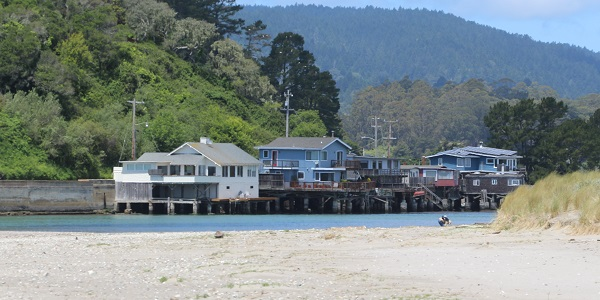
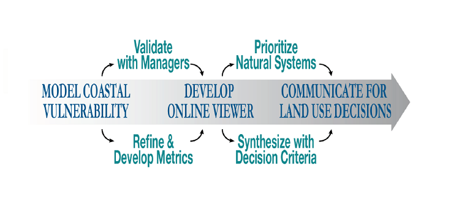

About
Problem || Audiences || Goals
Problem Statement
Rising seas and other effects of climate change will require local planners and decisionmakers to use the existing climate science and modeling information to make land use decisions in the face of expected climate impacts. Of particular importance, is the role of natural habitats in shielding communities and critical infrastructure from these impacts.
Our spatial approach connects coastal vulnerability modeling with land use planning to provide a decisionmaking framework and set of tools to foster successful adaptation to a changing climate in California and beyond.
- Many of California's coastal areas are seeing an increase in erosion rates.
(Stinson Beach, Marin County) - xxx

- xxx
Our Audiences
- California Coastal Commission
- Ocean Protection Council
- State Coastal Conservancy
- NOAA Office for Coastal Management
- City- and County-level Governments
- Local Resource Management Agencies
Our Goals
Our viewer tool will recommend restoration projects that meet the least legal and political resistance, explore any legal impediments to using nature-based strategies, and provide examples of where such strategies have been implemented.
Science-policy goals include...- Conduct multi-scale coastal vulnerability modeling throughout the state of California
- Identify, with state and local coastal managers, the coastal areas highly dependent on natural ecosystems for protection
- Create new biophysical and socio-economic metrics for decisions
- Develop an online viewer tool with a mapping interface to visualize key findings and report decision-relevant metrics
- Communicate investment and policy opportunities to guide decisions
- xxx
- xxx
- xxx